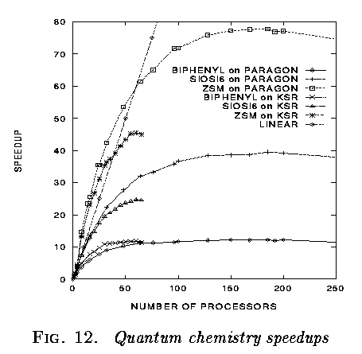
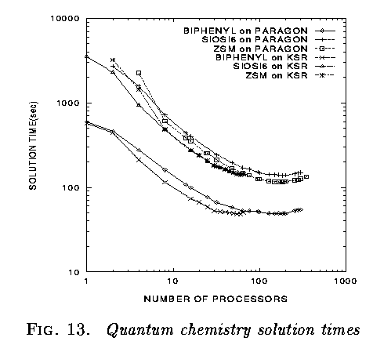

Our parallel eigensolver package is called PeIGS, and solves the standard and generalized, real, symmetric eigenproblems. It is based on bisection for eigenvalues and repeated inverse iteration and reorthogonalization for eigenvectors. The parallel performance is competitive with alternative methods for typical "chemical" problem sizes, and is illustrated with three applications from quantum chemistry
For a spectrum that is well spaced, there is essentially no orthogonalization time. Most of the time is consumed in the Householder reduction to tridiagonal form. For large numerically degenerate clusters, almost all of the time is consumed in the Householder reduction and in orthonormalization.


This work was performed under the auspices of the High Performance Computing and Communications Program of the Office of Scientific Computing, U.S. Department of Energy under contract DE-AC6-76RLO 1830 with Battelle Memorial Institute which operates the Pacific Northwest National Laboratory, a multiprogram national laboratory. This work has made extensive use of software developed by the Molecular Science Software Group of the Environmental Molecular Sciences Laboratory project managed by the Office Health and Energy Research.
This research was performed in part using the Caltech Concurrent Supercomputing Facilities (CCSF) operated by Caltech on behalf of the Concurrent Supercomputing Consortium. Access to this facility was provided by Pacific Northwest National Laboratory.